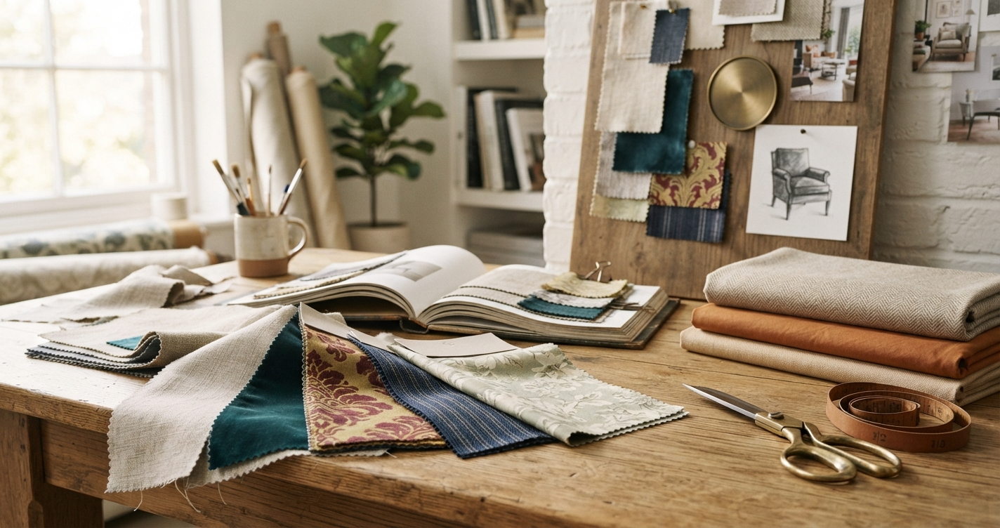

Case study · Earlier work · 2008–2013
Six brand websites on one shared backend, connected in real time to the company's IBM iSeries (AS400). It started with one plain conversation: we need a way to sell our products online.

Fabricut is a large, multi-brand fabric company. Each of its six brands, Fabricut, Trend, Stroheim, S. Harris, Vervain and Fabricut Contract, operated as its own company with its own products and ordering rules. When I arrived, the company had been trying to establish its websites for several years. What it had was static: customers couldn't see the products online, check stock or place an order. Nearly every order came through the call center, which handled thousands of order calls a day.
The project started with one plain conversation: we need a way to sell our products online.
Selling fabric online means showing fabric online, and the company had no product imagery to show. So the first step wasn't code. Under my direction, we hired a photographer to shoot fabric swatches, hardware components and furniture. That effort kept growing until it became an entire department, eventually with its own building.
Photography at that scale created its own problem: thousands of raw images that needed to be cropped, resized, named consistently and published. I built a system to manage that pipeline, and a custom framework to manage imagery, classification and website visibility for more than 165,000 fabrics.
The product, stock and order data lived on the company's IBM iSeries, not on anything the web could talk to directly. I built a custom PHP framework that integrated the websites with AS400 programs, physical files and logical views. That made real-time stock checks, order placement and wholesale account management possible from a browser.
Rather than build six separate systems, I built one shared backend that served every brand, with each brand's website carrying its own product rules and ordering requirements. Customers got a secure interface to browse products, check stock, place orders and check on them, under whichever brand they bought from.
With the catalog online, I built a digital design board: a JavaScript tool modeled on the physical boards designers use to assemble fabrics, finishes and furniture for a project. Within a year, every one of our competitors was building their own.
Live in under a year, from the first "sell our products online" conversation to a rolled-out ordering system across all six brands.
Call-center order volume fell from thousands of calls a day to a few hundred, as most customers moved to ordering online.
A photography operation that became its own department, supplying imagery for more than 165,000 fabrics.
"When Daniel came to Fabricut, we had been trying to establish our web sites for several years. Daniel assessed our needs and quickly gained an understanding of how things worked. During his five years with us, he designed, created and maintained several web sites in a multi-brand environment. He took the lead himself, working both independently and under the guidance of our Marketing Department. We needed a site that would allow our customers to view fabrics, place and check on orders and check stock. Much of this information was stored on a non-PC system (IBM iSeries) and required the creation of a new interface. Daniel used existing knowledge as well as newly acquired skills to complete every task with speed and quality."
The tools have changed completely since then. The pattern hasn't.
Start from a plain business conversation, find the real problem underneath it, and build the system that changes how the company works.
It's the same pattern I follow today at Asphalt & Fuel Supply.